WRose Serif
О Шрифте
WRose Serif – старостильная антиква созданная специально для игры WindRose.
WRose Serif — это грубая, нарочито изломанная интерпретация венецианской антиквы. Он подчеркивает атмосферу парусной эпохи, в которой выполнена игра.
Шрифт имеет два начертания (спокойный и гранжевый) и поддерживает капитель. Он хорошо подходит для заголовков и небольших текстовых блоков
Овервью
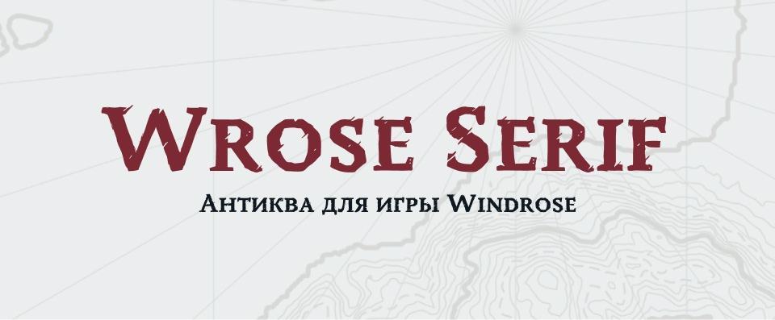
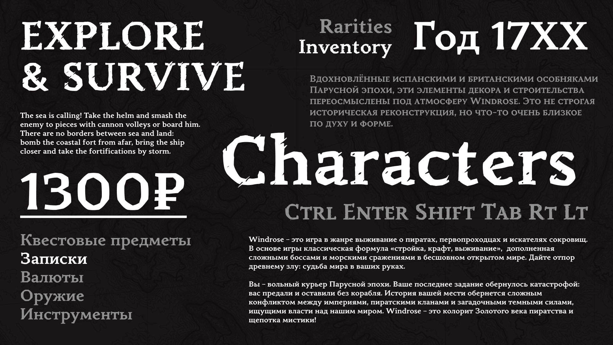
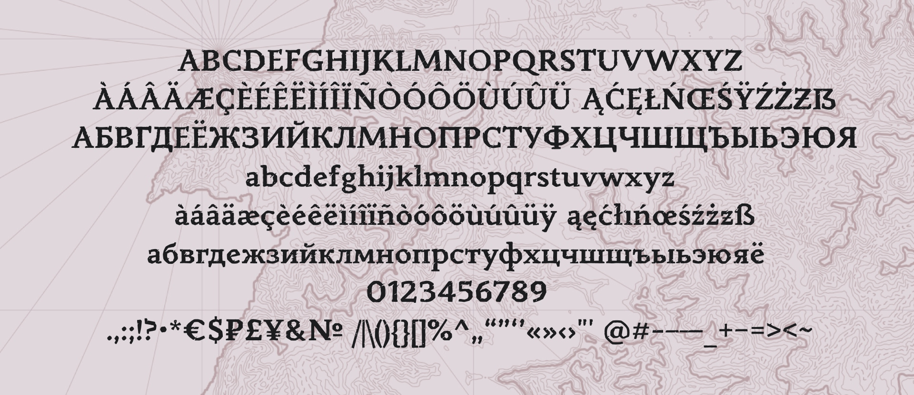
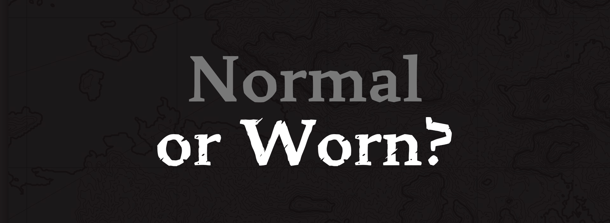
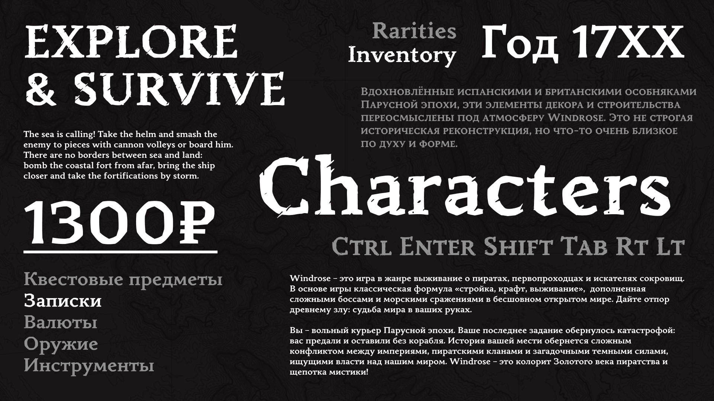
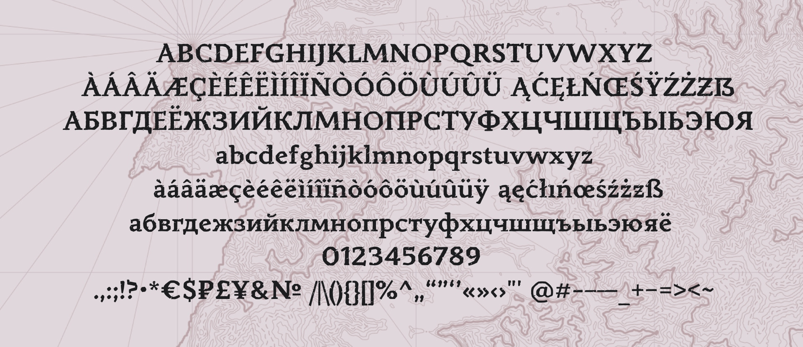
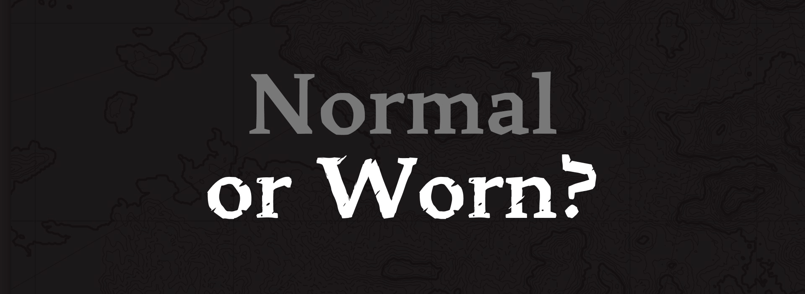
Шрифт в игре
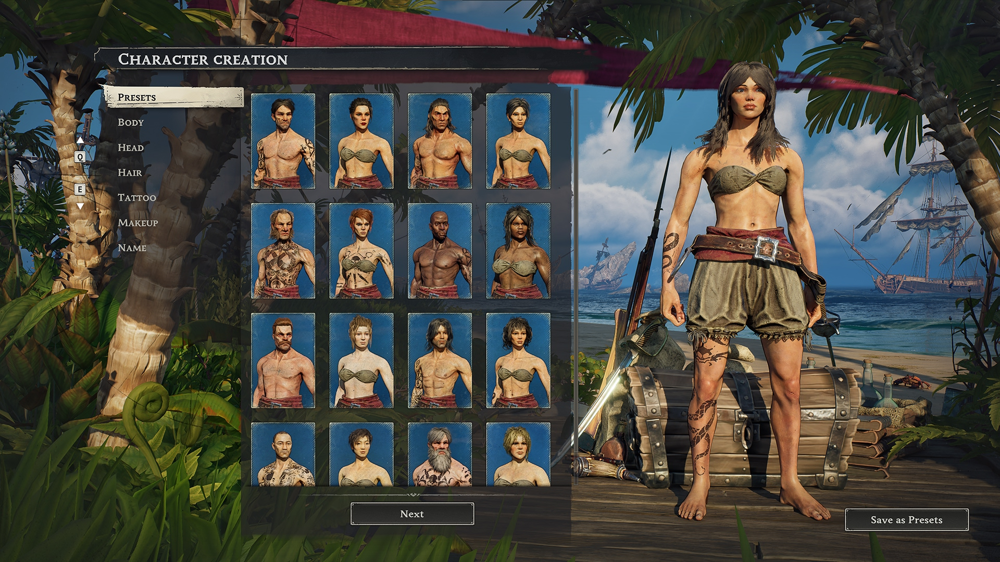
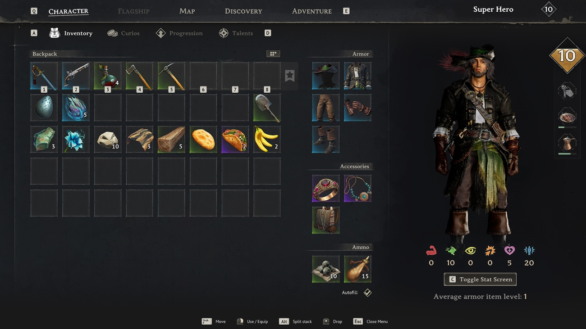
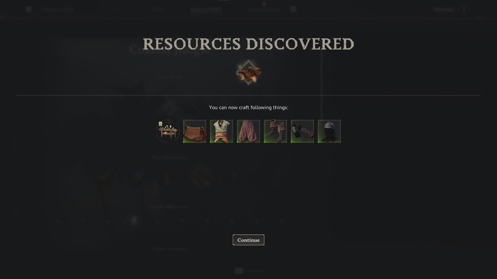
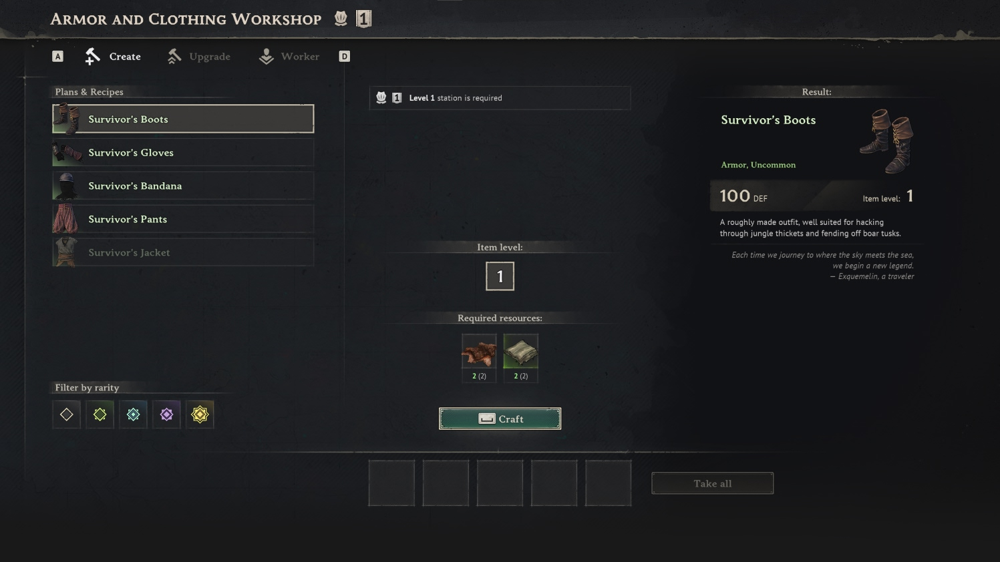
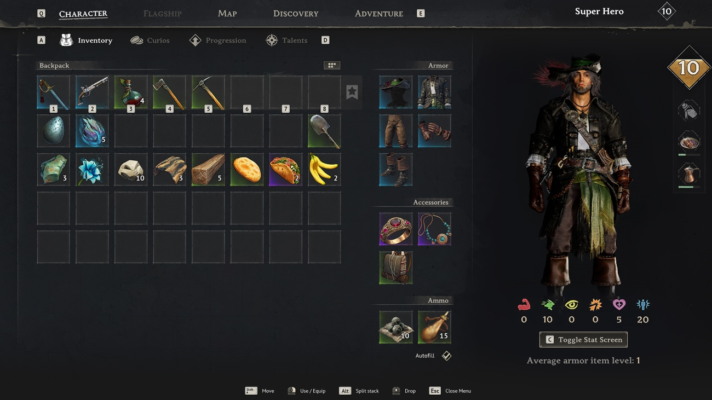
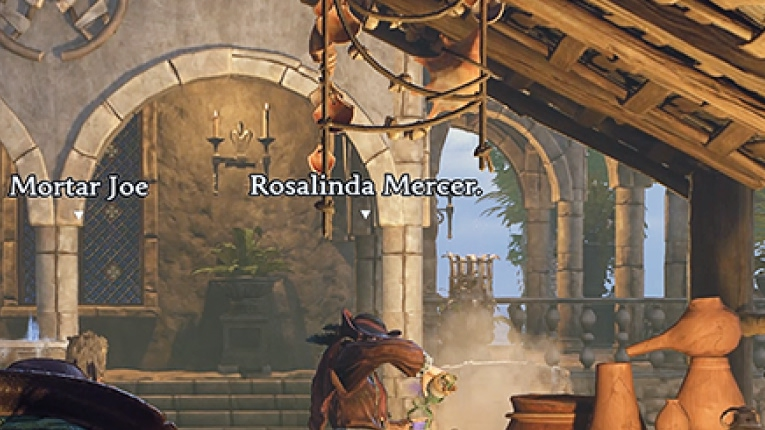
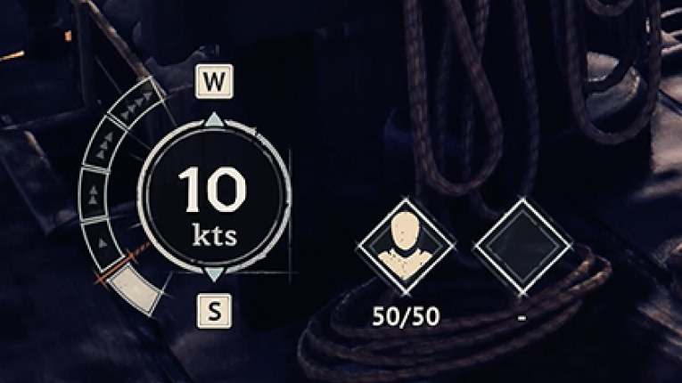
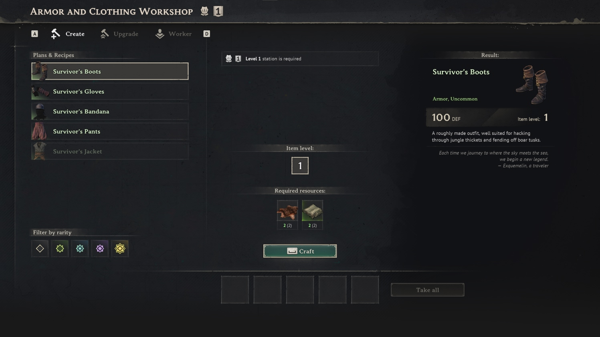
Поддерживаемые
языки
Abaza, Acheron, Achinese, Afar, Ahtna, Alekano, Alonquin, Amahuaca, Amarakaeri, Amis, Anaang, Andaandi, Dongolawi, Anuta, Aragonese, Arbëreshë Albanian, Asháninka, Ashéninka Perené, Balinese, Banjar, Basque, Batak Dairi, Batak Karo, Batak Mandailing, Batak Simalungun, Batak Toba, Bemba (Zambia), Bena (Tanzania), Bikol, Bislama, Borana-Arsi-Guji Oromo, Breton, Buginese, Candoshi-Shapra, Caquinte, Caribbean Hindustani, Cashibo-Cacataibo, Catalan, Cebuano, Central Aymara, Chachi, Chavacano, Chiga, Chokwe, Chuukese, Cimbrian, Cofán, Cornish, Corsican, Crimean Tatar, Dehu, Eastern Arrernte, Eastern Oromo, English, Erzya, Fijian, Filipino, French, Friulian, Galician, Garifuna, German, Gheg Albanian, Gilbertese, Gooniyandi, Guadeloupean Creole French, Gusii, Haitian, Hani, Hiligaynon, Hopi, Huastec, Ido, Iloko, Indonesian, Interglossa, Interlingua, Interlingue, Irish, Italian, Ixcatlán Mazatec, Jamaican Creole English, Japanese, Javanese, K'iche', Kabuverdianu, Kalaallisut, Kalenjin, Kaonde, Kaqchikel, Kashubian, Kekchí, Kenzi, Mattokki, Khasi, Kimbundu, Kinyarwanda, Kituba (DRC), Klingon, Kongo, Konzo, Kumyk, Ladin, Ladino, Lojban, Low German, Lozi, Luba-Lulua, Luo (Kenya and Tanzania),
Luxembourgish, Makonde, Malagasy, Malaysian, Manx, Maore Comorian, Mapudungun, Mauritian Creole, Meriam Mir, Meru, Minangkabau, Mohawk, Moksha, Murrinh-Patha, Mwani, Mískito, Naga Pidgin, Ndonga, Neapolitan, Ngazidja Comorian, Nobiin, Nogai, Nomatsiguenga, North Ndebele, Northern Qiandong Miao, Northern Uzbek, Novial, Nyankole, Occitan, Orma, Oroqen, Palauan, Pampanga, Papantla Totonac, Papiamento, Pichis Ashéninka,Piemontese, Pijin, Pintupi-Luritja, Pipil, Pohnpeian, Polish, Portuguese, Potawatomi, Purepecha, Quechua, Romansh, Rotokas, Rundi, Russian, Sango, Sangu (Tanzania), Saramaccan, Sardinian, Scots, Scottish Gaelic, Sena, Seri, Seselwa Creole French, Shawnee, Shipibo-Conibo, Shona, Sicilian, Soga, Somali, Soninke, South Ndebele, Southern Aymara, Southern Qiandong Miao, Spanish, Sranan Tongo, Standard Malay, Sundanese, Swahili, Swiss German, Tagalog, Tedim Chin, Tetum, Tetun Dili, Tok Pisin, Tosk Albanian, Tumbuka, Turkish, Tzeltal, Tzotzil, Uab Meto, Upper Guinea Crioulo, Volapük, Waray (Philippines), Warlpiri, Wayuu, West Central Oromo, Western Abnaki, Western Frisian, Wiradjuri, Xhosa, Yanesha', Yucateco, Zulu, Zuni, Zaparo